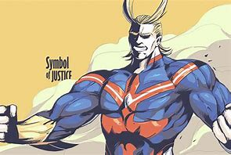
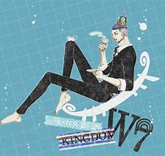
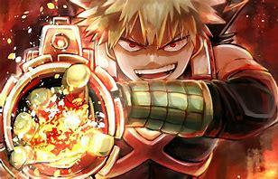

Hello This is the page where i will share theories with you.
First we are starting with the One Piece Iceburg Theory explained.
One Piece Iceberg Theory
Now we have MHA theory "Allmight's secret quirk!?
Allmights secret Quirk!?
Now we have "The Gross truth of Bakugo's Quirk!?
The gross truth about Bakugo's Quirk!?
3rd we have "How deadly the Death note is?
How deadly the death note is?
So now i am going to tell you who the people in the video are.
First we have Allmight(MHA)

Now we have Iceburg (One Piece)

Third we have Bakugo Katsuki
